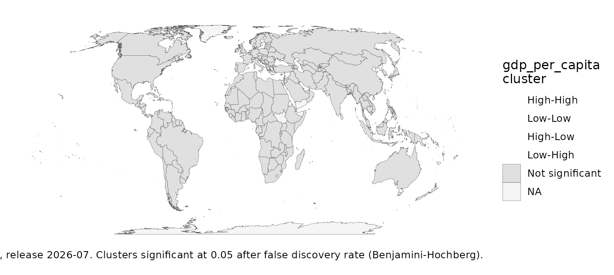

Spatial statistics on a world of islands
Source:vignettes/articles/spatial-statistics.Rmd
spatial-statistics.RmdA spatial statistic is only as good as its idea of who is next to whom. On a world map, land borders leave Japan, Australia, New Zealand and every island state with no neighbours at all, so a statistic on contiguity weights silently drops a quarter of the countries with data. The package defaults to the five nearest neighbours, so every country with a centroid takes part.
knn <- morans_i(snap, gdp_per_capita, n_perm = 499)
border <- morans_i(snap, gdp_per_capita, n_perm = 499,
weights = country_weights("contiguity"))
rbind(knn = knn[, c("i", "n", "n_excluded", "p_value")],
contiguity = border[, c("i", "n", "n_excluded", "p_value")])
#> # A tibble: 2 × 4
#> i n n_excluded p_value
#> * <dbl> <int> <int> <dbl>
#> 1 0.452 199 0 0.002
#> 2 0.600 146 53 0.002Local clusters, with the false discoveries controlled
A local Moran test runs once per country, so about one in twenty
comes out “significant” by chance at the 5% level.
local_morans() and lisa_map() control the
false discovery rate by default (Caldas de Castro & Singer 2006), on
9,999 conditional permutations so the smallest p-values can clear
it.
lisa_map(attach_geometry(snap), gdp_per_capita, n_perm = 999)
Two variables at once: high GDP per capita among long-lived neighbours.
b <- bivariate_lisa(snap, gdp_per_capita, life_expectancy, n_perm = 999)
table(b$cluster)
#>
#> High-High Low-Low High-Low Low-High Not significant
#> 9 29 0 0 161Rates
Moran’s I on raw rates mistakes the noise of small denominators for
clustering. eb_morans_i() standardises each rate by its own
reliability first (Assuncao & Reis 1999); it agrees with
spdep::EBImoran.mc().
set.seed(2)
d <- snap[!is.na(snap$population), ]
d$births <- stats::rpois(nrow(d), d$population * 0.018)
eb_morans_i(d, births, population, n_perm = 499)
#> # A tibble: 1 × 7
#> i expected n n_excluded n_links p_value excluded
#> <dbl> <dbl> <int> <int> <int> <dbl> <list>
#> 1 -0.0451 -0.00467 215 1 979 0.816 <chr [1]>Categories and dynamics
Do income groups cluster? Join counts compare the neighbouring pairs in the same group with random labelling:
join_counts(snap, income, n_perm = 499)
#> # A tibble: 5 × 7
#> category n joins expected sd z p_value
#> <chr> <int> <int> <dbl> <dbl> <dbl> <dbl>
#> 1 High income 80 146 84.9 6.64 9.20 0.002
#> 2 Low income 26 33 8.66 2.60 9.37 0.002
#> 3 Lower middle income 54 65 38.2 5.35 5.02 0.002
#> 4 Not classified 1 0 0 0 NA 1
#> 5 Upper middle income 54 61 38.3 5.08 4.46 0.002spatial_markov() asks whether a country’s neighbours
change its odds of moving between classes (Rey 2001), with a homogeneity
test; see ?spatial_markov.